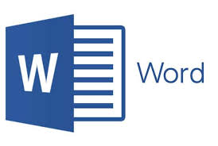

O Microsoft Word é um programa destinado à criação de documentos, vulgarmente conhecido como processador de texto. Este programa faz parte de um conjunto de programas de produtividade da mundialmente conhecida Microsoft Corporation, presidida por Bill Gates, o Microsoft Office. Este poderoso programa de criação de documentos apresenta inúmeras funcionalidades que permitem ao utilizador criar novos documentos ou trabalhar em documentos já existentes com uma grande eficácia e rapidez. Algumas das mais-valias conseguidas através das sucessivas versões e atualizações do Word são a melhoria da fiabilidade que protege os trabalhos do utilizador, os painéis de tarefas que auxiliam na localização e formatação de conteúdos, as descrições inteligentes sensíveis ao contexto que proporcionam um rápido acesso às funcionalidades relevantes para a realização de determinada tarefa, o acesso a informações de diversas origens e programas diferentes sem abandonar o documento Word no qual o utilizador se encontra a trabalhar, a inserção e gestão de tabelas e imagens, a gravação de documentos em formato HTML, etc.

1- Uso de modelos de documentos padronizados disponíveis na própria interface da ferramenta, como relatórios, declarações, currículos, entre outros. Atenção: esse recurso só está disponível a partir do Microsoft Word 2010;
2- Escrita de textos sem limite de tamanho, ou seja, você pode usá-lo tanto para pequenos documentos, como um relatório, quanto para documentos maiores, como a escrita de um TCC;
3- Inserção de elementos gráficos ao longo do seu texto, como tabelas, gráficos, imagens, links da web e até mesmo recursos audiovisuais;
4- Inserir cabeçalhos e rodapés, afinal é importante identificar os documentos expedidos por uma empresa com o logotipo, além de adicionar numeração das páginas e datas;
5- Personalização das folhas, podendo inserir cabeçalhos, rodapés, folhas de rosto, sumário, margem e quebra de páginas do layout;
6-Inserção de referências bibliográficas de forma simples e formatada através do próprio Word para um trabalho que exija as normas da ABNT;
7- Armazenamento em nuvem, visto que os documentos são compatíveis com o OneDrive e podem ser acessados em tempo real por outras pessoas;
8- Verificação ortográfica e gramatical do seu texto de forma automatizada;
9- Exportação de arquivos em diversos formatos, tais como .docx, PDF e até mesmo XML. Para salvar o arquivo neste formato, basta ir até a aba “Arquivo > Salvar Como > PDF (*.pdf)”, por exemplo, ou pressionar o atalho “Ctrl+S”;
10- Se você precisa realizar a leitura de uma monografia ou focar para escrever um texto de alta complexidade, o Modo Leitura do Word pode te ajudar! Para ativar essa função, basta pressionar “Ctrl+F1”. Assim, todos os menus e abas ficam ocultos;
Para alinhar as expectativas, vale ressaltar que se você quer apenas escrever um texto simples ou fazer anotações que não precisam do uso de recursos gráficos e formatações avançadas, o Word não é um recurso necessário. Nesse caso, ferramentas mais simples de edição de texto como o WordPad ou um bloco de anotações do próprio computador podem suprir suas necessidades com êxito. O Word contém ferramentas para inserir diversos recursos ao longo do documento e, como é um software pago, seu uso não é necessário para tarefas mais simples como as citadas anteriormente. Entretanto, se você ainda estiver na dúvida se o Word é realmente necessário para você, a Microsoft disponibiliza um teste grátis durante determinado período. Assim, com a experiência de usuário, será possível avaliar com clareza se vale ou não a pena para o seu caso. Legal demais, não é?